Last Man
Standing Run
Eine Runde. Jede volle Stunde. Immer wieder, bis nur noch eine Person übrig ist. Düsseldorf. [Date TBA Soon]
Das Format
Ein Backyard Ultra hat kein festes Ziel. Du läufst, bis du nicht mehr kannst oder alle anderen aufgegeben haben.
6-km-Loop
Immer dieselbe Runde, immer wieder.
Auf die Stunde
Zu jeder vollen Stunde startet die nächste Runde.
60 Minuten
Die Zeit, die nach deiner Runde übrig bleibt, gehört dir zum Essen und Erholen.
Bis einer bleibt
Das Rennen endet, wenn nur noch eine Person übrig ist.
Schaffst du die Runde nicht in 60 Minuten, bist du draußen. Das Event läuft so lange, bis nur noch eine Person übrig bleibt: der oder die Last Man Standing.
Die Strecke
Ein Rundkurs, den du nach ein paar Stunden im Schlaf kennst. Lade die GPX-Datei für deine Uhr oder App herunter.
6,08 km pro Runde · +15 m Anstieg
Funktioniert mit Garmin, Komoot, Strava und jeder GPX-fähigen Uhr oder App.
Das Base Camp
Hier verbringst du die Pausen zwischen den Runden. Alles liegt direkt am Start/Ziel.
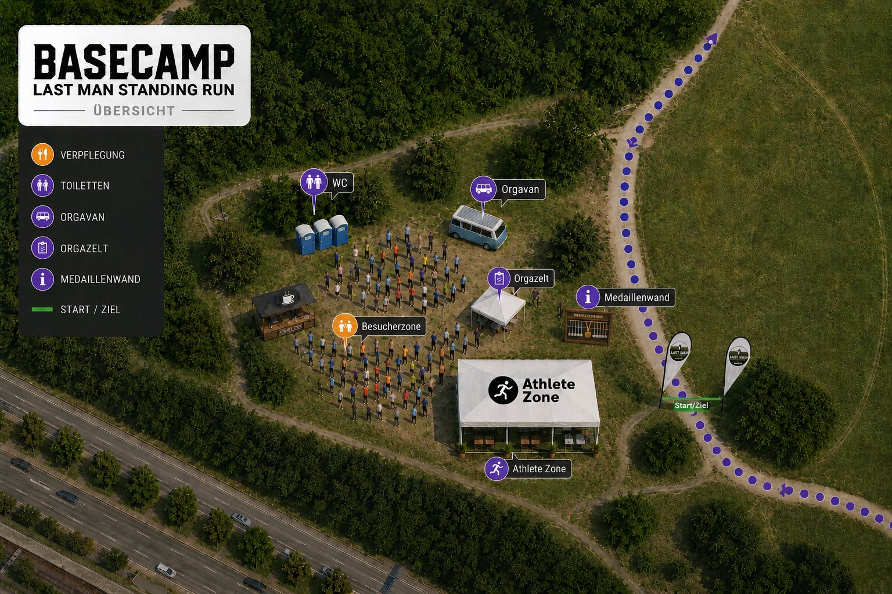
Rückblick 2026
Die dritte Ausgabe in Düsseldorf: Das sind die Gesichter und Momente vom Last Man Standing Run 2026.
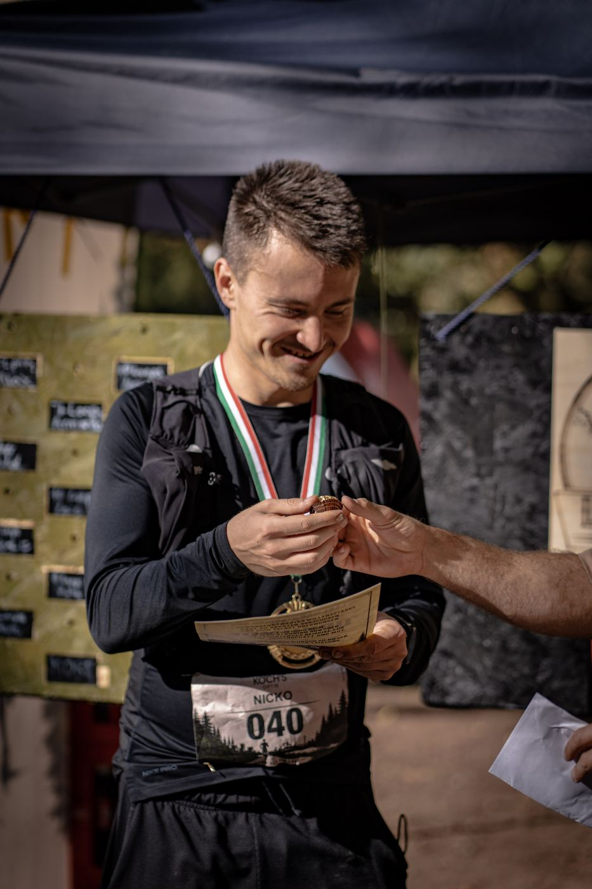
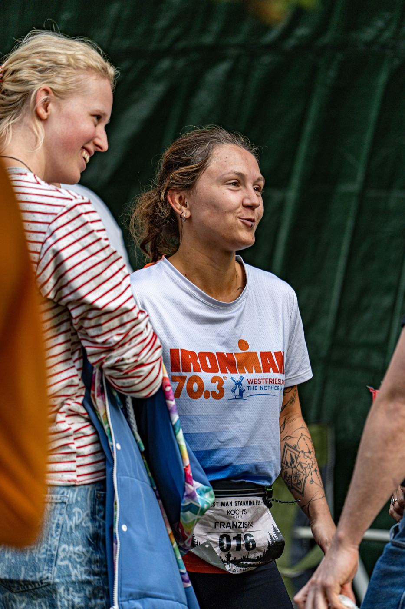
Eindrücke
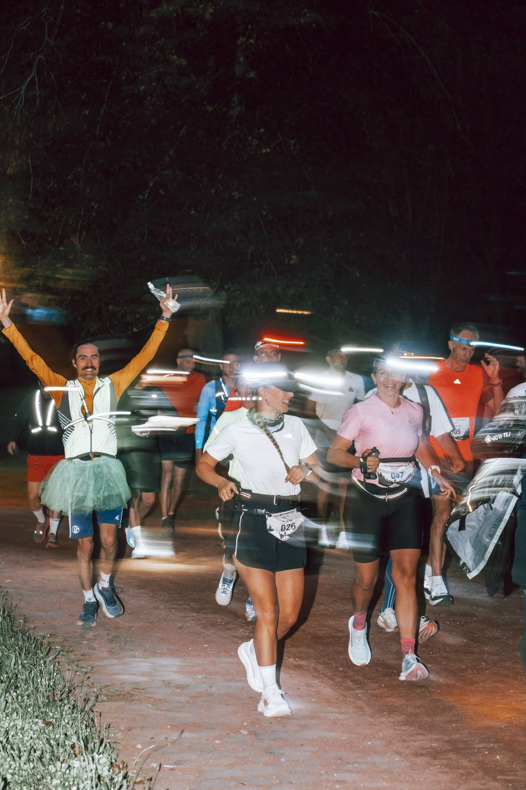
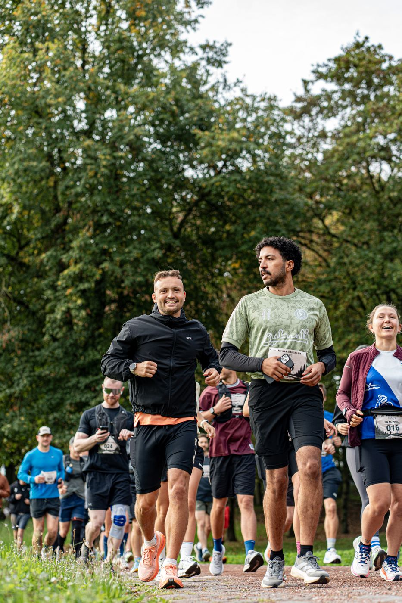
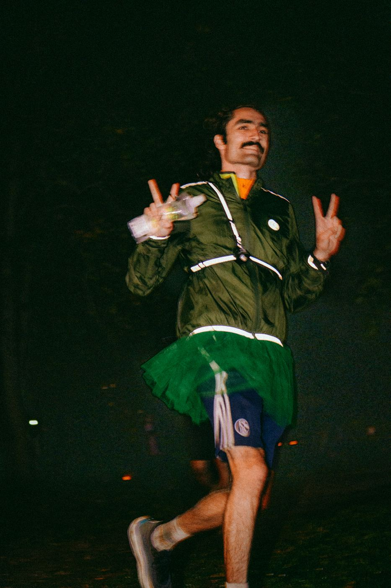
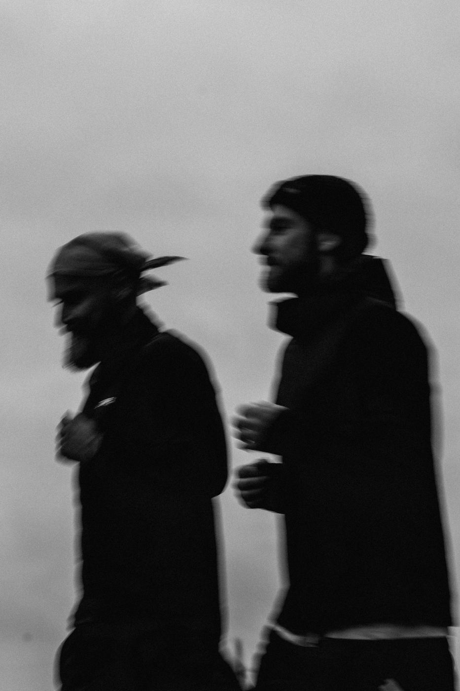
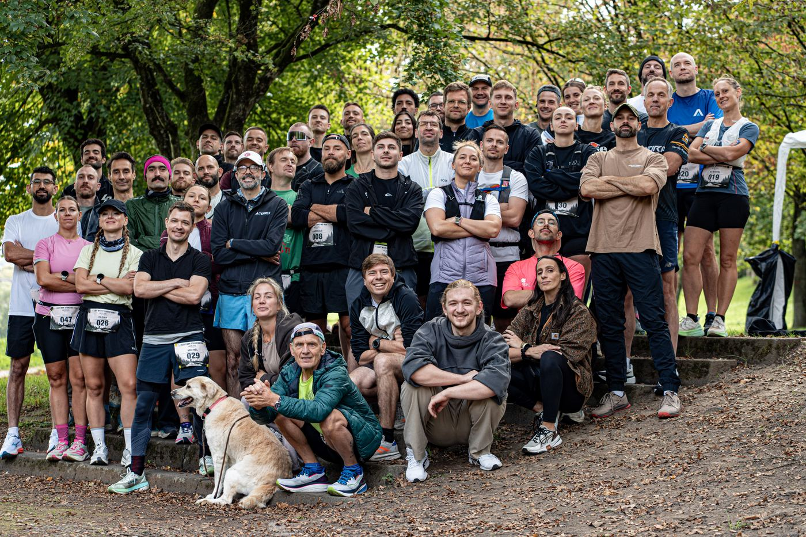
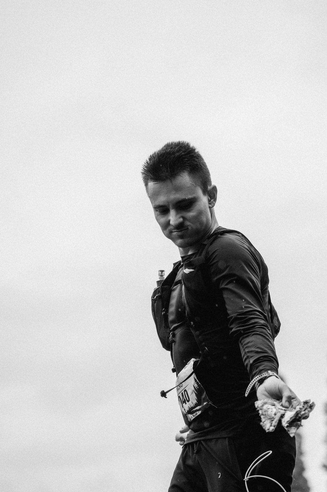
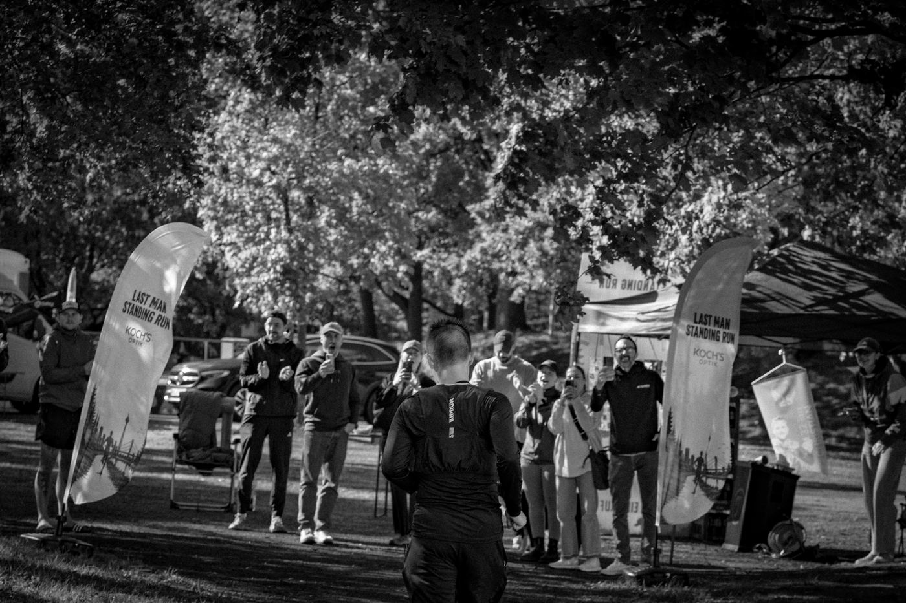
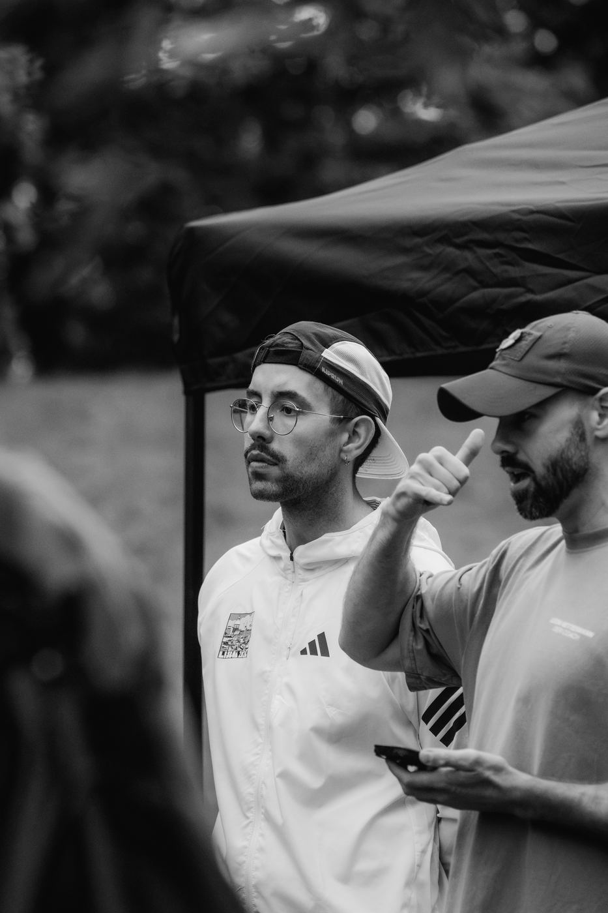
Die Veranstalter
Alexander Konrad und Leon Vettermann organisieren den Last Man Standing Run.
Infos & Anmeldung
- Wann
- [Date TBA Soon]
- Check-In
- 07:30 Uhr
- Start Rennen
- 10:00 Uhr
- Anmeldung
- Ticket-Link folgt
- Kontakt
- lastmanstandingrun@gmail.com
- @lastmanstandingrun